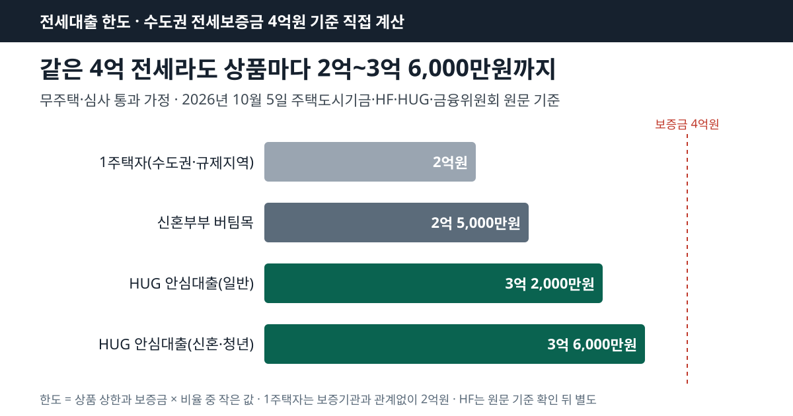
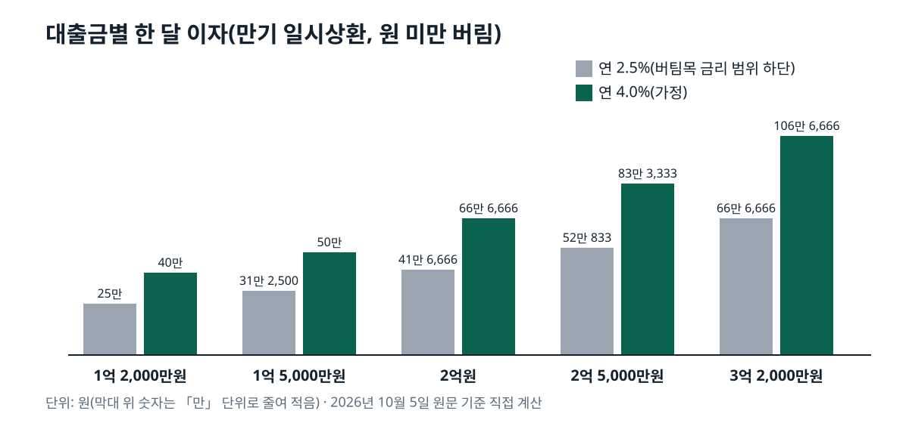

시중은행 전세대출 한도는 보증기관 규칙으로 정해집니다. 무주택자라면 보증금의 80%(HUG 신혼·청년은 90%)까지이고 HUG는 수도권 4억원, HF는 4억원이 상한이며, 수도권·규제지역 1주택자는 2억원을 넘지 못합니다. 2026년 10월 5일 기준으로 HF·HUG·주택도시기금·금융위원회 원문을 열어 맞춘 숫자입니다.
정책 상품인 버팀목은 더 작습니다. 일반 버팀목은 수도권 1억 2,000만원, 청년 버팀목은 1억 5,000만원, 신혼부부 버팀목은 수도권 2억 5,000만원이 끝입니다. 대신 금리가 신혼부부 상품 기준 연 1.9%부터 시작합니다.
결국 한도는 「상품 상한」 「보증금 × 비율」 「소득으로 갚을 수 있는 금액」 세 숫자 가운데 가장 작은 값입니다. 아래에서 전세보증금 2억 5,000만원과 4억원을 넣어 상품마다 직접 계산했고, 한 달 이자와 2027년 1월로 예고된 변경까지 이어서 정리했습니다.
목차
은행은 전세대출을 내줄 때 보증기관의 보증서를 담보로 잡습니다. 보증기관은 한국주택금융공사(HF), 주택도시보증공사(HUG), SGI서울보증 셋이라, 한도는 은행보다 「어느 보증서를 쓰느냐」로 갈립니다.
보증비율은 보증기관이 대출금 가운데 몇 퍼센트를 대신 책임지는지를 뜻합니다. HUG 전세금안심대출보증 안내는 이 비율을 수도권·규제지역 80%, 그 밖 90%로 적고 있습니다. 비율이 낮아질수록 은행이 떠안는 몫이 커지므로 한도 계산에도 반영됩니다.
버팀목은 기금 돈을 빌려주는 정책 상품이라 상한과 소득 기준을 주택도시기금이 직접 정하고, 담보로 HF나 HUG 보증 가운데 하나를 고릅니다.
| 상품 | 한도 상한 | 보증금 대비 | 대상 보증금 |
|---|---|---|---|
| 버팀목 일반 | 수도권 1억 2,000만원 · 밖 8,000만원 | 70% | 수도권 3억원 · 밖 2억원 이하 |
| 청년 버팀목 | 1억 5,000만원 | 80% | 3억원 이하 |
| 신혼부부 버팀목 | 수도권 2억 5,000만원 · 밖 1억 6,000만원 | 80% | 수도권 4억원 · 밖 3억원 이하 |
| HF 일반전세자금보증 | 4억원, 수도권·규제지역은 계산값의 8/9 | 80% | 수도권 7억원 · 밖 5억원 이하 |
| HUG 안심대출(일반) | 수도권 4억원 · 그 외 3억 2,000만원 | 80% | 수도권 7억원 · 그 외 5억원 이하 |
| HUG 안심대출(신혼·청년) | 수도권 4억 5,000만원 · 그 외 3억 6,000만원 | 90% | 같음 |
| 1주택자(HF·HUG·SGI) | 수도권·규제지역 2억원 | - | - |
버팀목 세 줄은 주택도시기금 버팀목전세자금 안내·청년전용 버팀목·신혼부부전용 전세자금 화면에서, HF 줄은 HF 일반전세자금보증 화면에서 옮겼습니다. 버팀목은 상한과 비율 중 작은 금액이 한도이고, 보증금이 「대상 보증금」을 넘으면 아예 신청할 수 없습니다.
SGI서울보증의 일반 한도는 이번에 상품 화면을 글자로 열지 못해 표에서 뺐습니다. SGI도 1주택자 줄에는 들어갑니다. 금융위원회가 2025년 9월 7일 보증기관 3사의 1주택자 수도권·규제지역 전세대출 한도를 2억원으로 일원화했고, 그 전에는 SGI 3억원, HF 2.2억원, HUG 2억원으로 서로 달랐습니다.
같은 규칙에 보증금을 넣어 보면 차이가 숫자로 드러납니다. 무주택자이고 소득·신용 심사를 통과한다고 가정했습니다. 수도권 4억원 전세라면 신혼부부 버팀목은 2억 5,000만원, HUG 일반은 3억 2,000만원이고, 나머지 8,000만원은 자기 돈으로 채워야 합니다.
| 상품 | 수도권 2억 5,000만원 | 수도권 4억원 | 수도권 밖 2억 5,000만원 |
|---|---|---|---|
| 버팀목 일반(소득 5천만원 이하) | 1억 2,000만원 | 대상 아님 | 대상 아님 |
| 청년 버팀목(만 34세 이하) | 1억 5,000만원 | 대상 아님 | 1억 5,000만원 |
| 신혼부부 버팀목 | 2억원 | 2억 5,000만원 | 1억 6,000만원 |
| HUG 안심대출(일반) | 2억원 | 3억 2,000만원 | 2억원 |
| HUG 안심대출(신혼·청년) | 2억 2,500만원 | 3억 6,000만원 | 2억 2,500만원 |
HF를 표에서 뺀 까닭은 화면의 단서 한 줄입니다. HF는 한도를 「4억원, 보증금 80%, 상환능력별 한도 중 가장 적은 금액」으로 정한 뒤 「수도권·규제지역은 산출결과의 8/9만 인정」한다고 적었습니다. 그런데 이 8/9가 빌리는 돈에 곱하는 값인지, 보증하는 금액(대출금 × 보증비율)에 곱하는 값인지는 화면에 나오지 않습니다. 같은 화면의 1주택자 칸(수도권·규제지역 1.8억원, 그 외 2억원)을 금융위원회의 「1주택자 2억원 일원화」와 나란히 놓으면 보증금액 쪽으로 읽힐 여지가 있지만, 원문에서 확인되지 않아 금액으로 바꾸지 않았습니다. 수도권에서 HF 보증으로 받을 수 있는 금액은 은행 창구의 HF 보증 심사 결과로 확인하는 것이 정확합니다.
수도권 밖 일반 버팀목이 「대상 아님」인 까닭은 수도권 밖에서는 보증금 2억원 이하 집만 받기 때문입니다.

| 상품 | 소득 기준(부부 합산) | 그 밖의 조건 |
|---|---|---|
| 버팀목 일반 | 5,000만원 이하(2자녀 이상 6,000만원, 신혼 7,500만원) | 순자산 3억 4,500만원 이하, 무주택 세대주 |
| 청년 버팀목 | 5,000만원 이하(신혼 7,500만원) | 만 19~34세 세대주, 순자산 3억 4,500만원 이하 |
| 신혼부부 버팀목 | 7,500만원 이하 | 혼인 7년 이내 또는 3개월 안 결혼 예정 |
| HF 청년 특례 | 7,000만원 이하 | 만 34세 이하 무주택, 최대 2억원 |
| HF 일반 | 소득 상한 없음 | 소득·부채로 상환능력별 한도 |
| HUG 안심대출 | 신혼 6,000만원·청년 5,000만원 이하면 90% 적용 | 연 이자 ≤ 인정소득의 40% |
순자산 3억 4,500만원은 기금이 「2026년도 기준」이라고 적은 숫자로, 통계청 가계금융복지조사의 소득 3분위 가구 평균값에서 가져옵니다. 버팀목 금리는 일반이 연 2.5~3.5%, 청년이 연 2.2~3.3%로 소득이 낮을수록 낮습니다. 청년 버팀목 표에서 연소득 2천만원 초과 4천만원 이하 구간은 연 2.5%입니다. 내 순자산이 전체 가구 가운데 어디쯤인지는 순자산 상위 10%는 2025년 조사 11억 20만원부터 글의 분위 표로 먼저 가늠해 보면 이 기준선과 비교하기 쉽습니다.
HF 특례전세자금보증의 무주택 청년 특례는 1억원 이하로 쓰면 상환능력별 한도를 보지 않고 보증비율 100%를 적용합니다.
줄어들 수 있습니다. HUG는 「연간 인정소득 대비 연간 부담하는 이자비용이 40% 이내」인 금액까지만 보증합니다. 다른 대출이 없다고 보고, 금리를 가정해 거꾸로 풀면 필요한 소득이 나옵니다.
| 대출금 | 월 이자(연 2.5%) | 월 이자(연 4.0%) | HUG 최소 인정소득(연 4.0%) |
|---|---|---|---|
| 1억 2,000만원 | 25만원 | 40만원 | 1,200만원 |
| 1억 5,000만원 | 312,500원 | 50만원 | 1,500만원 |
| 2억원 | 416,666원 | 666,666원 | 2,000만원 |
| 2억 5,000만원 | 520,833원 | 833,333원 | 2,500만원 |
| 3억 2,000만원 | 666,666원 | 1,066,666원 | 3,200만원 |
계산식은 「대출금 × 연 금리 ÷ 40%」입니다. 연 4.0%라면 3억 2,000만원을 보증받는 데 인정소득 3,200만원이 필요하고, 한 달 이자는 106만 6,666원입니다. 연 2.5%는 버팀목 금리 범위의 아래 끝을 넣은 값이고, 시중은행 금리는 은행과 시점마다 달라 4.0%로 가정했습니다.
버팀목도 소득을 봅니다. LH·SH 같은 협약기관 주택에서 보증금 반환채권을 넘기는 방식이면 연소득 2천만원 초과는 연소득의 4.0배, 1,500만원 이하는 4,500만원을 「연간인정소득」으로 잡고, 재직 1년 미만이면 한도가 2천만원 이하로 묶일 수 있습니다.
HUG 보증료도 따로 듭니다. 수도권 4억원 아파트(부채비율 70% 이하)에 3억 2,000만원을 빌리면 반환보증 0.107%로 428,000원, 특약보증은 보증금액 2억 5,600만원에 0.031%로 79,360원, 1년 507,360원이고 한 달로는 약 42,280원입니다.

받을 수 있지만 두 겹으로 묶입니다. 먼저 한도입니다. 집이 어디에 있든 1주택자가 수도권·규제지역에서 전세를 얻으면 보증기관과 관계없이 2억원이 상한이고, HUG 안내문도 「1주택자인 경우 2억원을 초과할 수 없음」이라고 적습니다.
다음은 DSR(소득 대비 1년 원리금 상환액 비율)입니다. 금융위원회는 2025년 10월 15일 대출수요 관리 방안에서 1주택자가 수도권·규제지역에서 받는 전세대출의 이자상환분을 DSR에 넣기로 하고 2025년 10월 29일부터 시행했습니다. 2억원을 연 4.0%로 빌린다면 1년 이자 800만원이 DSR에 들어가고, 연봉 6,000만원이라면 그것만으로 DSR 13.3%p를 차지합니다. 무주택자의 전세대출은 이 계산에 아직 들어가지 않습니다. 2주택자는 HUG 안내에 「대출보증 취급 불가」로 적혀 있습니다.
금융위원회가 2026년 8월 13일 발표한 「부동산 시장 안정을 위한 금융 종합대책」 첨부 안건에는 전세대출 보증 변경이 두 가지 들어 있습니다. 둘 다 시행일이 2027년 1월 1일인 발표안이고, 2026년 10월 5일 HF·HUG 화면에는 아직 반영되지 않았습니다.
첫째, 1주택자의 보증비율을 수도권·규제지역 70%, 그 밖 80%로 낮춥니다. 무주택자는 지금처럼 80%·90%입니다. 둘째, 수도권·규제지역 아파트를 가진 1주택자가 그 집에 본인도 배우자도 산 적 없이 가족이 아닌 사람에게 세를 주고 있다면 전세대출 신규 취급과 만기연장을 원칙적으로 막습니다. 세입자가 있는 집을 사서 아직 들어가지 못한 경우처럼 안건이 적은 예외는 따로 둡니다.
청년 쪽은 반대 방향입니다. 같은 안건은 HF 청년 특례 전세대출보증 대상을 만 34세 이하에서 39세 이하로, 신혼·자녀 가구 한도를 3억원으로 넓히는 일정을 2026년 10월로 잡았습니다. 안건에 「세부사항 추후 확정」이라고 붙어 있어, 확정 공지가 나오기 전까지는 위 표의 34세·2억원이 현행입니다.
결혼을 앞두고 양가에서 전세보증금 일부를 받을 계획이라면, 세금이 붙지 않는 범위는 혼인 증여공제를 넘는 금액별 세금 계산 글에서 금액마다 따져 볼 수 있습니다.
한국 시각 10월 5일 새벽에 버팀목 세 화면, HF 일반·특례 보증 화면, HUG 안심대출보증 화면, 금융위원회 보도자료 세 건과 8월 13일 첨부 안건 PDF를 차례로 열어 한도·비율·소득 문구를 옮겼고, 표의 한도와 이자는 그 숫자로 계산 스크립트를 돌려 다시 셌습니다.
HF 상환능력별 한도의 세부 산식과 SGI서울보증 상품 화면은 글자로 확인하지 못해 계산에서 뺐습니다. 버팀목 금리표 가운데 일반·신혼 상품의 구간별 금리 숫자도 화면에 글자로 나오지 않아 범위(연 2.5~3.5%, 연 1.9~3.3%)만 적었습니다. 실제 한도는 은행 여신 심사와 보증기관 심사를 함께 거쳐 정해집니다.
이 글은 기준일의 공개 원문을 정리한 일반 정보이며, 개인의 사정에 따라 결과가 달라질 수 있습니다.